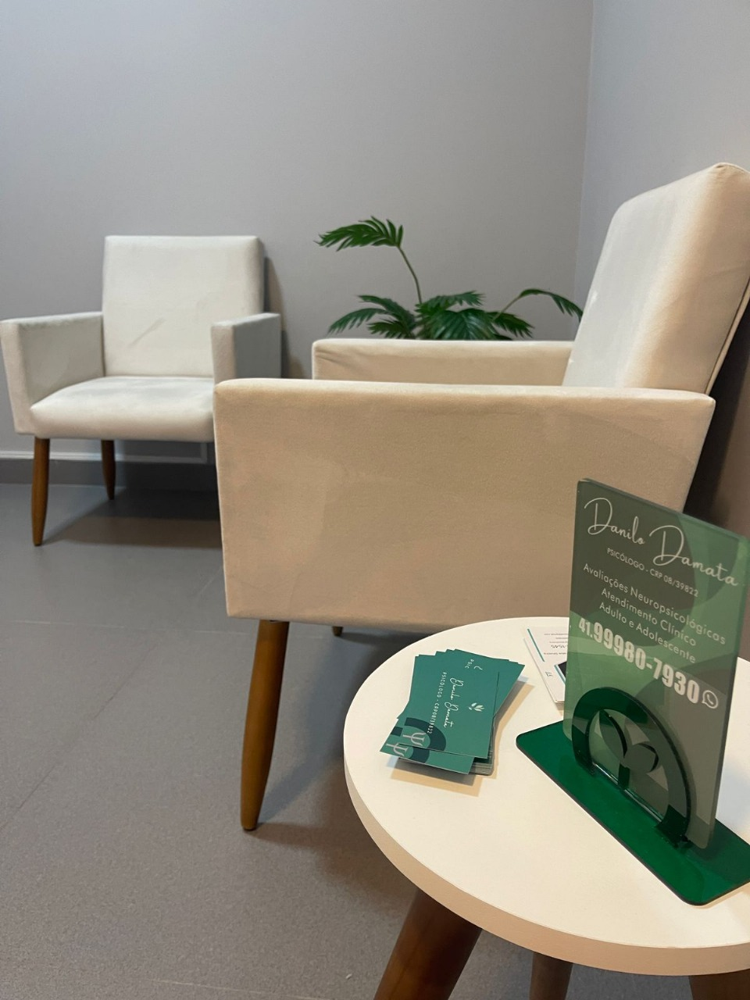

Clique em cada especialidade para entender melhor o processo de avaliação.

A Avaliação Neuropsicológica investiga, de forma detalhada, possíveis alterações nas funções cognitivas, emocionais e comportamentais. O processo auxilia no diagnóstico, na compreensão das demandas individuais e na construção de estratégias que promovem bem-estar, autonomia e qualidade de vida.

Com instrumentos padronizados, como o WISC-IV e o WAIS-III, avaliamos o desempenho intelectual e o repertório cognitivo. A análise abrange raciocínio, memória, velocidade de processamento e capacidade de aprendizagem, contribuindo para diagnósticos precisos e para o planejamento de intervenções adequadas.

A TCC ajuda você a compreender como seus pensamentos influenciam suas emoções e atitudes. A partir dessa consciência, construímos juntos estratégias para lidar com ansiedade, depressão e outros desafios do dia a dia, favorecendo mais equilíbrio, clareza e qualidade de vida.

O TDAH afeta o funcionamento neurocognitivo, influenciando atenção, impulsividade e regulação da energia. Esses desafios podem impactar o aprendizado, a organização e o comportamento no dia a dia. A avaliação adequada e estratégias personalizadas — como adaptações no ensino, manejo da rotina e estímulo à autonomia — ajudam a fortalecer o potencial e a qualidade de vida de quem convive com o TDAH.

O TEA se expressa de maneiras únicas, influenciando a forma como cada pessoa se comunica, se relaciona e percebe o mundo. Sensibilidades sensoriais, dificuldades sociais e habilidades especiais podem estar presentes. Com uma avaliação cuidadosa e apoio contínuo, é possível construir caminhos que promovam desenvolvimento, bem-estar e inclusão com respeito à singularidade de cada indivíduo.

As dificuldades de aprendizagem podem tornar mais desafiador ler, escrever, organizar ideias ou resolver problemas. Elas podem surgir por fatores neurológicos, emocionais ou do ambiente. Com uma avaliação cuidadosa, é possível compreender melhor esses obstáculos e construir caminhos que apoiem o desenvolvimento e a rotina escolar ou profissional.
Mudanças na memória, na linguagem, na orientação e na realização de tarefas simples podem gerar preocupação e impacto na rotina. Uma avaliação atenta ajuda a compreender esses sinais e a identificar condições como Alzheimer, Demências ou sequelas de AVC, oferecendo caminhos de cuidado que favorecem bem-estar e autonomia.
Cada pessoa possui um jeito próprio de sentir, pensar e agir. Em alguns casos, esses padrões podem gerar sofrimento ou dificultar relações e decisões. Uma avaliação atenta permite compreender essas características com mais clareza e construir estratégias que favoreçam equilíbrio, autoconhecimento e qualidade de vida.
Sem pressa e sem roteiro — eu te ajudo a entender qual avaliação faz mais sentido pra você.